Komunální volby 2026
TRŠICKOobce pro život.
Program pro obec Tršice a její místní části.
Období 2026–2030.
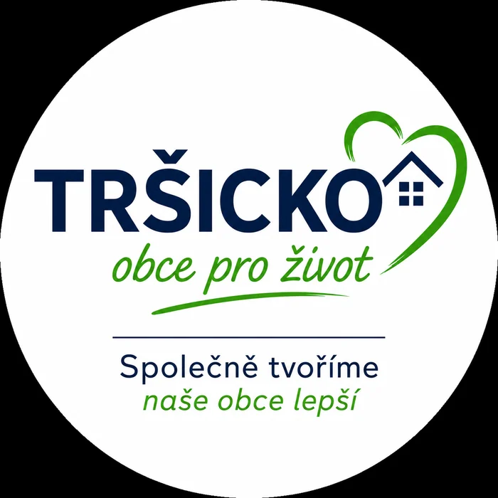
O sdružení
Úvodní slovo
Milí sousedé,
rádi bychom vám představili nové sdružení Tršicko – obce pro život a našich jedenáct kandidátů pro nadcházející volby do zastupitelstva obce.
Přečíst celé úvodní slovo
Spojuje nás jednoduchá myšlenka: chceme obce, ve kterých se dá dobře, bezpečně a aktivně žít. Obce, kde se lidé znají, vzájemně si pomáhají a kde má každý prostor podílet se na jejich budoucnosti.
Nechceme dělat politiku. Chceme poctivě pracovat pro blaho našich obcí, naslouchat vašim podnětům a hledat řešení, která budou dávat smysl dnes i v dalších letech.
Jsme připraveni spolupracovat s dalšími kandidáty z ostatních sdružení i s vámi, našimi sousedy. Věříme, že dobré věci vznikají tehdy, když se dokážeme domluvit, respektovat se a spojit síly pro společný cíl.
Každý z našich kandidátů přináší zkušenosti ze svého zaměstnání, spolků i každodenního života v našich obcích. Aktivně se podílíme na jejich činnosti a chceme své schopnosti a energii využít také ve prospěch celé obce.
Společně se chceme podílet na dalším zlepšování kvality života ve všech našich obcích – v Tršicích, Lipňanech, Zákřově, Vacanovicích, Přestavlkách i Hostkovicích. Záleží nám na bezpečném prostředí, péči o veřejný prostor, rozumném rozvoji i zachování místních tradic.
Budeme rádi za vaši důvěru a váš hlas v nadcházejících komunálních volbách.
Jsme tu pro vás.
TRŠICKO-obce pro život
Společně tvoříme naše obce lepší.
{kind=link}
Program 2026–2030
Volební program
Program pro obec Tršice a její místní části.
01Správa obcí a transparentnost
- Chceme jasnou, otevřenou a srozumitelnou komunikaci mezi vedením obce a občany.
- Zaměříme se na moderní a efektivní fungování obecního úřadu.
- Podpoříme zapojení obyvatel do rozhodovacího procesu.
- Budeme pravidelně pořádat veřejná setkání s občany i mimo veřejná zastupitelstva.
02Rozvoj infrastruktury v jednotlivých obcích
- Budeme pečovat o obecní majetek a veřejná prostranství.
- Připravíme jasnou koncepci využití obecních budov a pozemků včetně jejich přehledů.
- Vytvoření návrhů míst pro setkávání s občany a cestu k jejich úspěšné realizaci.
- Chceme identifikovat a postupně řešit specifické potřeby jednotlivých místních částí.
- Podpoříme budování nových sítí veřejného osvětlení a datových sítí s postupným ukládáním do země.
- Budeme usilovat o vybudování splaškové kanalizace s jasně stanoveným harmonogramem realizace.
03Rozpočtová odpovědnost a plánování
- Prosazujeme odpovědné, transparentní hospodaření a dlouhodobé investiční plánování.
- Aktivně budeme vyhledávat dotační příležitosti pro nové projekty.
- Investiční priority chceme nastavovat podle skutečných potřeb obyvatel.
04Doprava a bezpečnost
- Budeme pečovat o místní komunikace, přechody a dopravní značení.
- Zaměříme se na bezpečnost chodců, dětí a seniorů.
- Podpoříme rozšiřování parkovacích míst tam, kde je to potřeba.
- Chceme úzce spolupracovat se složkami IZS, BESIP a státní správou.
05Školství, rodiny a mládež
- Podpoříme rozvoj mateřské a základní školy.
- Budeme usilovat o opravu a navýšení kapacit základní školy.
- Zaměříme se na bezpečné trasy do škol.
- Podpoříme volnočasové aktivity a zájmové kroužky.
- Budeme rozvíjet dětská hřiště a prostory pro mladé lidi.
06Senioři a sociální oblast
- Chceme podporovat dostupné služby pro seniory a osoby se sníženou soběstačností.
- Podpoříme mezigenerační spolupráci a společenské aktivity pro všechny generace.
07Životní prostředí a obecní zeleň
- Budeme pečovat o veřejnou zeleň, parky a lesy.
- Zaměříme se na kvalitní a efektivní systém odpadového hospodářství.
- Podpoříme údržbu krajiny, vodních toků a výsadbu nové zeleně tam, kde to bude vhodné a přínosné.
08Kultura, tradice a spolky
- Budeme podporovat kulturní, společenské a obecní akce.
- Chceme aktivně spolupracovat s místními spolky.
- Budeme chránit a rozvíjet místní tradice.
09Sport a volnočasové aktivity
- Zaměříme se na rozvoj a údržbu sportovních areálů.
- Podpoříme amatérské sportovní skupiny a místní sportovní aktivity.
- Budeme pečovat o síť stezek pro pěší a cyklisty.
- Chceme vytvářet kvalitní veřejný prostor pro rodiny, děti i aktivní občany.
10Podpora podnikání a místních služeb
- Chceme výrazně zlepšit spolupráci podnikatelů s obcí.
- Budeme vytvářet podmínky pro rozvoj služeb, řemesel, obchodů a gastronomie.
Kandidátka 2026
Kandidáti sdružení
Jedenáct kandidátů do zastupitelstva obce.
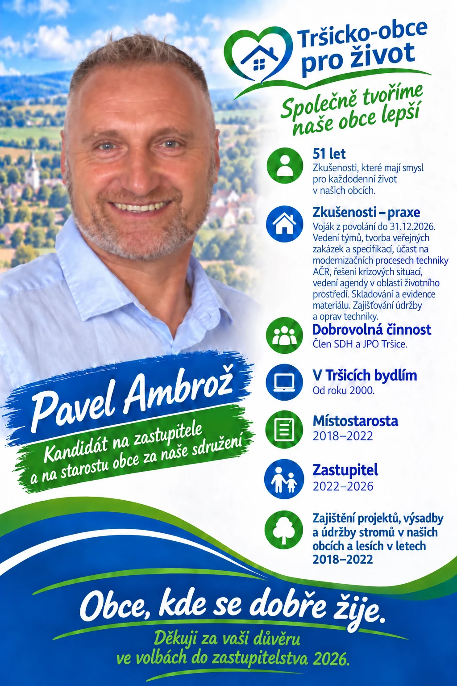
01Pavel Ambrož
Zobrazit profil
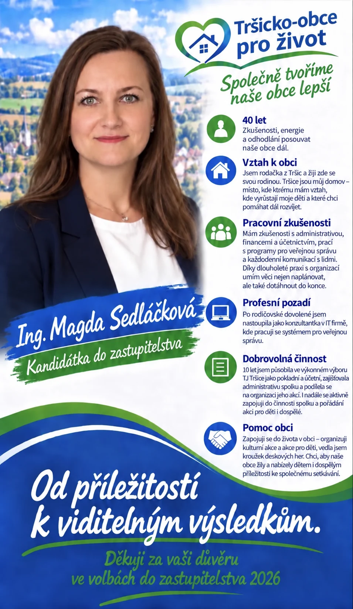
02Ing. Magda Sedláčková
Zobrazit profil
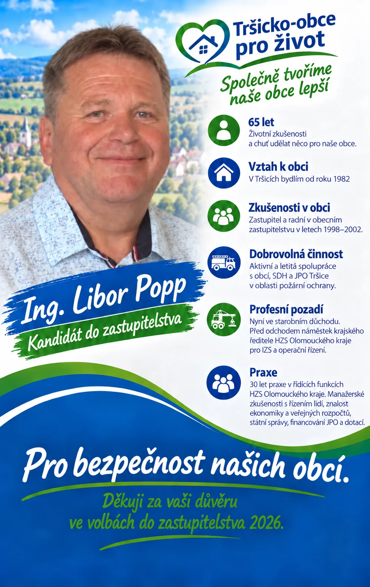
03Ing. Libor Popp
Zobrazit profil
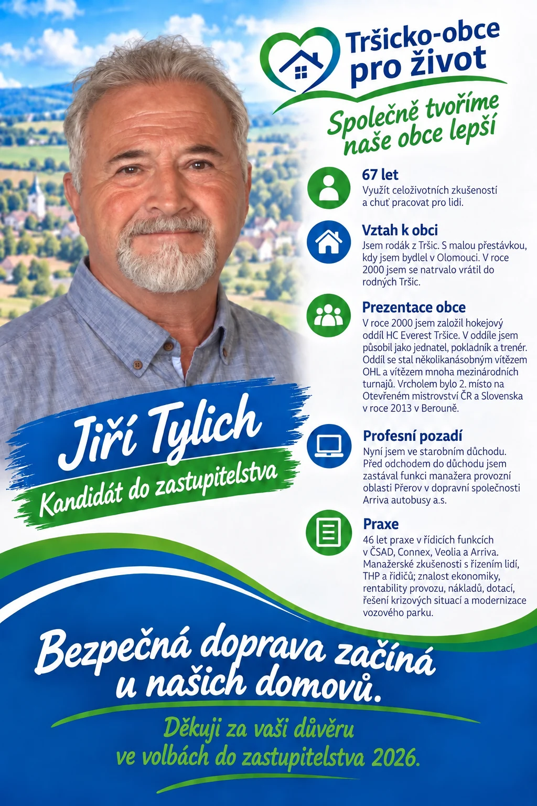
04Jiří Tylich
Zobrazit profil
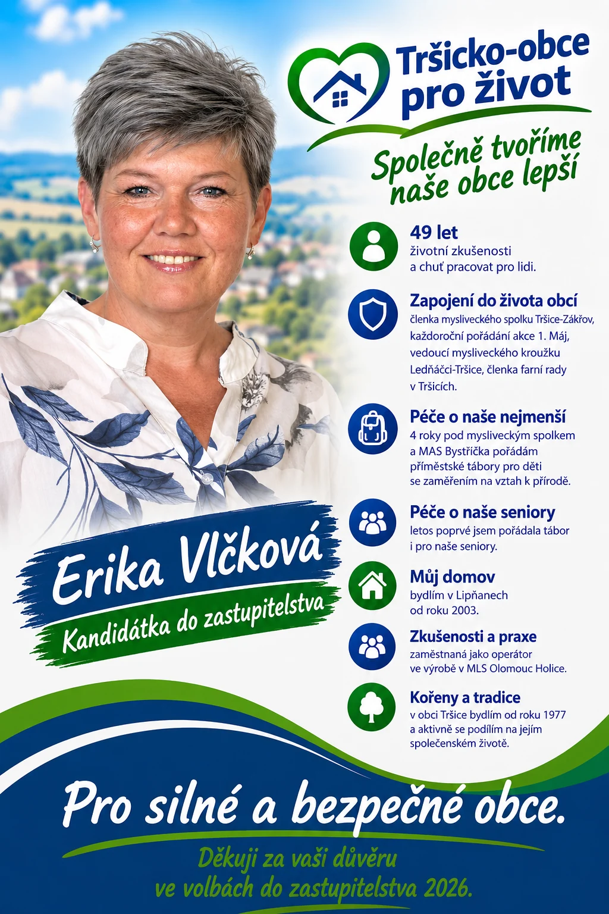
05Erika Vlčková
Zobrazit profil
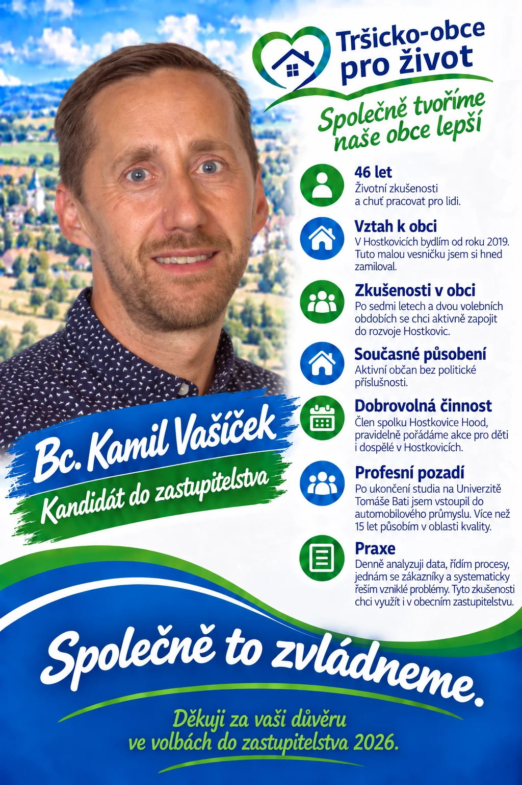
06Bc. Kamil Vašíček
Zobrazit profil
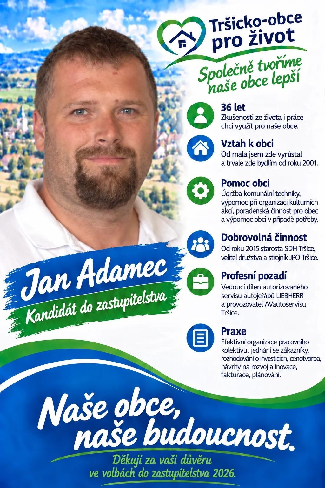
07Jan Adamec
Zobrazit profil
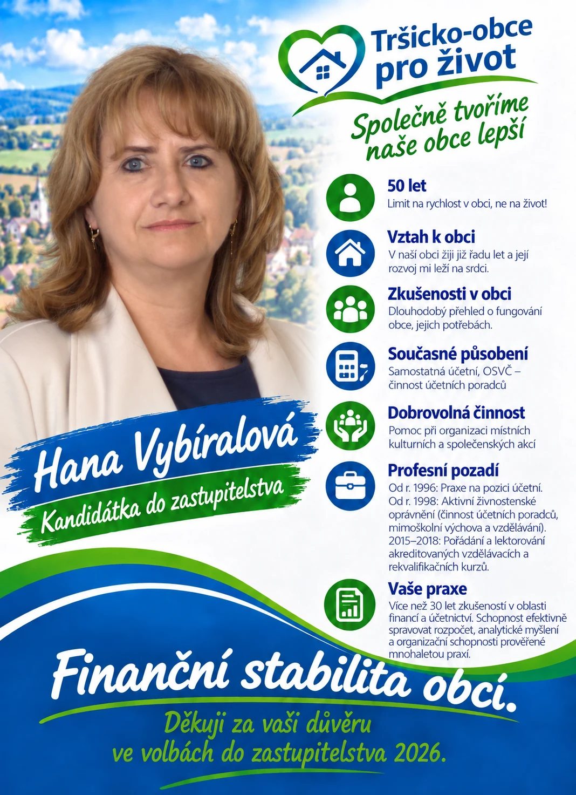
08Hana Vybíralová
Zobrazit profil
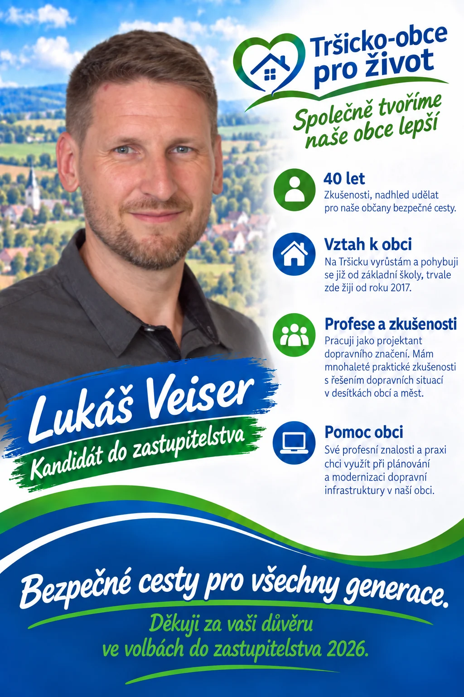
09Lukáš Veiser
Zobrazit profil
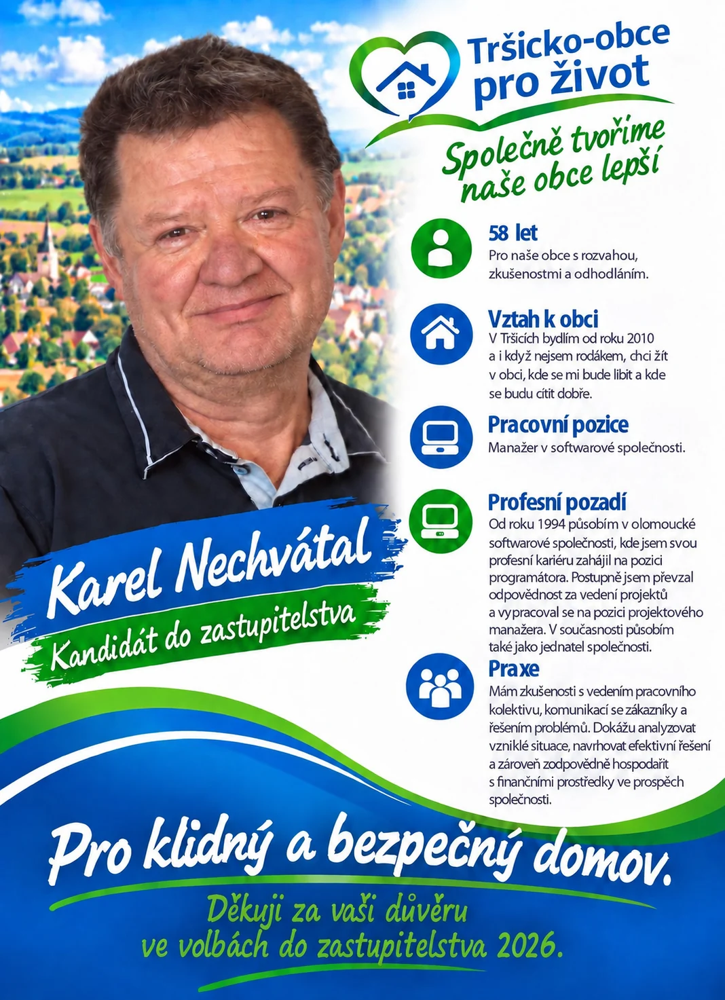
10Ing. Karel Nechvátal
Zobrazit profil
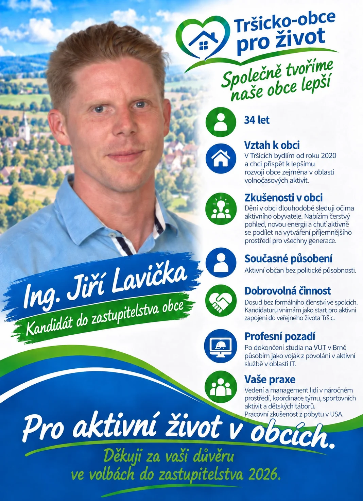
11Ing. Jiří Lavička
Zobrazit profil
Setkání s občany
Pozvánka na
přátelské setkání
Setkání sdružení Tršicko – obce pro život se všemi kandidáty, představením programu a vizualizací podoby některých částí obcí.
Host setkání: Ing. Jan Koudelka, projektový ředitel společnosti Reticulum.
{kind=link}
- Den
- Neděle
- Začátek
- 15:00
- Místo
- Společenský sál
v Tršicích